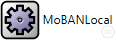
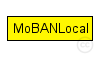
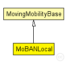

This documentation is released under the Creative Commons license
This documentation is released under the Creative Commons licenseThis is the local mobility module of MoBAN. It should be instantiated in each node that belongs to a WBAN. The NED parameter "coordinatorIndex" determine to which WBAN (MoBANCoordinator) it belongs. The current implementation uses the Random Walk Mobility Model (RWMM) for individual (local) movement with a sphere around the node, with given speed and sphere radius of the current posture. The reference point of the node it the current posture, the sphere radius, and the speed is given by the corresponding coordinator. RWMM determines the location of node at ant time relative to the given reference point.
The following diagram shows usage relationships between types. Unresolved types are missing from the diagram. Click here to see the full picture.
The following diagram shows inheritance relationships for this type. Unresolved types are missing from the diagram. Click here to see the full picture.
| Name | Type | Description |
|---|---|---|
| MovingMobilityBase | simple module |
Abstract base module for mobility models. |
| Name | Type | Default value | Description |
|---|---|---|---|
| debug | bool | false | |
| constraintAreaMinX | double | -1m/0 |
min x position of the constraint area, unconstrained by default (negative infinity) |
| constraintAreaMinY | double | -1m/0 |
min y position of the constraint area, unconstrained by default (negative infinity) |
| constraintAreaMinZ | double | -1m/0 |
min z position of the constraint area, unconstrained by default (negative infinity) |
| constraintAreaMaxX | double | 1m/0 |
max x position of the constraint area, unconstrained by default (positive infinity) |
| constraintAreaMaxY | double | 1m/0 |
max y position of the constraint area, unconstrained by default (positive infinity) |
| constraintAreaMaxZ | double | 1m/0 |
max z position of the constraint area, unconstrained by default (positive infinity) |
| updateInterval | double | 0.1s |
the simulation time interval used to regularly signal mobility state changes and update the display |
| coordinatorIndex | int |
The index of the belonging coordinator module |
| Name | Value | Description |
|---|---|---|
| display | i=block/cogwheel | |
| class | MoBANLocal |
// This is the local mobility module of MoBAN. It should be instantiated in each node that belongs to a WBAN. The NED parameter "coordinatorIndex" // determine to which WBAN (MoBANCoordinator) it belongs. // The current implementation uses the Random Walk Mobility Model (RWMM) for individual (local) movement with a sphere around the node, with given speed // and sphere radius of the current posture. The reference point of the node it the current posture, the sphere radius, and the speed is given by the // corresponding coordinator. RWMM determines the location of node at ant time relative to the given reference point. simple MoBANLocal extends MovingMobilityBase { parameters: int coordinatorIndex; // The index of the belonging coordinator module @class(MoBANLocal); }
This documentation is released under the Creative Commons license